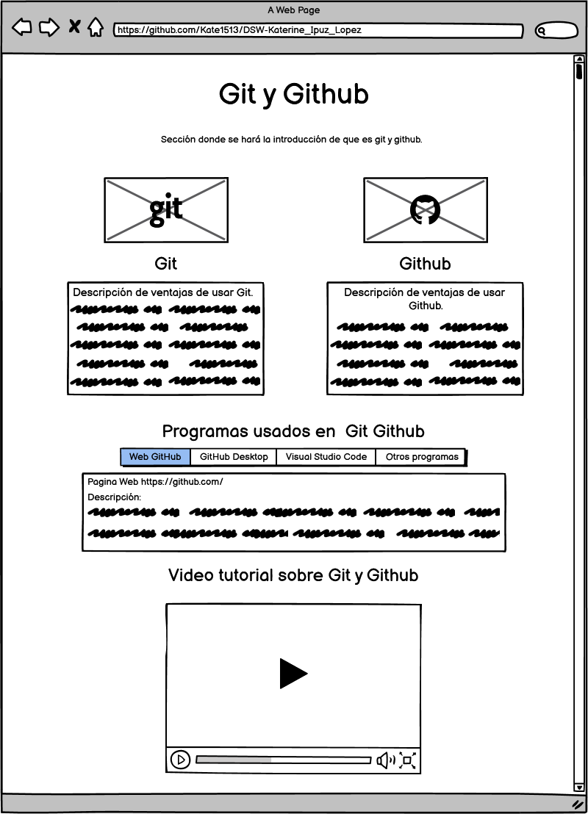

Git y Github
a) Objetivo del sitio
Objetivo General
Desarrollar la guia planteada para la fase 2 del curso Diseños de sitios Web.
Objetivos Especificos:
- Diseñar la OVA del estudiante 1, GIT y GITHUB.
- Publicar el borrador del contenido en una pagina llamada planning.html.
- Crear el Mockup de la pagina principal.
b) Materiales
Recursos de videos:
- Tutorial Git y Github parte 1: https://www.youtube.com/watch?v=hWglK8nWh60
- Tutorial Git y Github parte 2: https://www.youtube.com/watch?v=GG4mftkQVrs
Recursos de texto:
- Articulo web Git: https://medium.com/@janpoloy/qu%C3%A9-es-y-para-que-sirve-git-3fd106e6e137https://medium.com/@janpoloy/qu%C3%A9-es-y-para-que-sirve-git-3fd106e6e137
- Articulo web Github: https://www.hostinger.es/tutoriales/que-es-github/
Recursos de imagen:
- Github: https://www.deustoformacion.com/sites/deustoformacion/files/styles/imagen_listados_posts/public/posts/dfo-17-08-2017.jpg?itok=oxjiJIzy
- Git: https://miro.medium.com/max/910/1*JZ2YCpyIOO3JfnXy264b_A.png
c) Contenido
Seccion 1
En esta primera parte se hara la bienvenida a la persona que esta
observando el contenido.
Seccion 2
Aca se hara una breve descripcion de los conceptos basicos de Git y Github.
Seccion 3
Se realiza una lista con las ventajas del uso de Git y Github
Seccion 4
Se explican los programas y sitios web que hacen que Git y Github
funcionen de manera organica
Mockup
